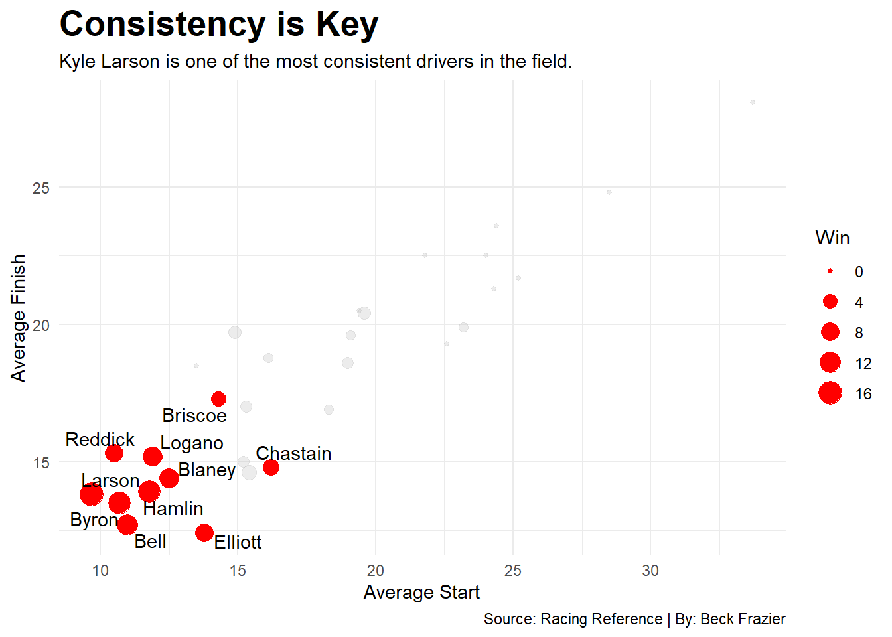
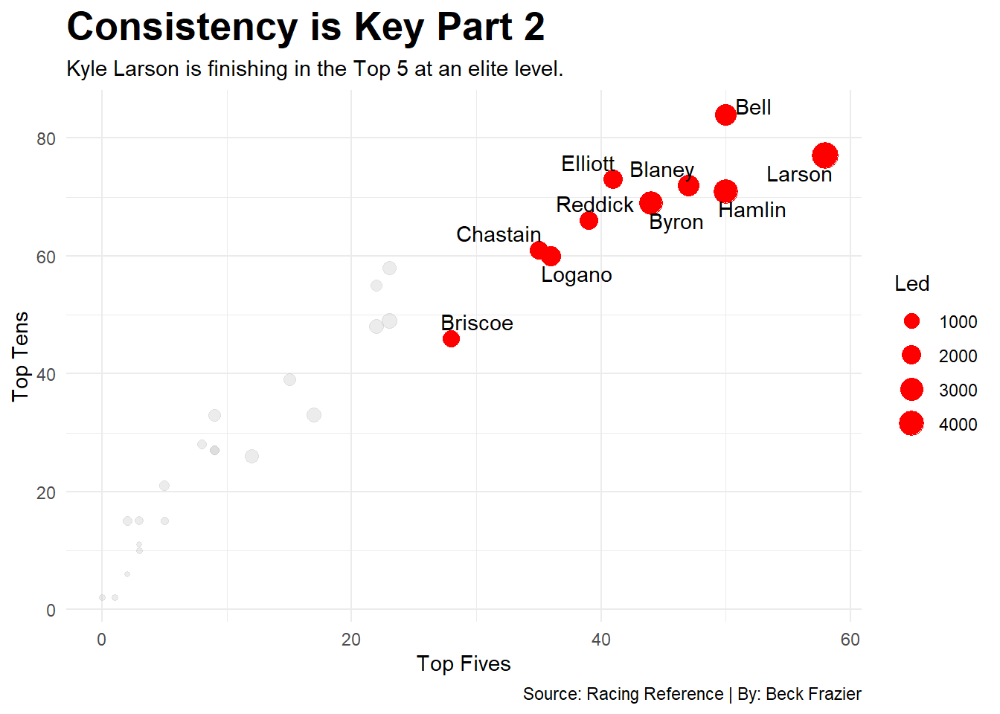

Is Kyle Larson the Best NASCAR Driver of the Gen 7 Era?
nascar
Author
Beck Frazier
Published
November 16, 2025
There has been lots of talk about whether or not Kyle Larson is the best driver in the world. Well, that’s a difficult question to answer. To start, there’s countless different driving leagues and disciplines which makes it hard to determine if someone is the best driver in the world. It would be unfair to compare Larson to Marc Marquez (MotoGP) or to Max Verstappen (F1). Why? Well because the cars and motorcycles drive differently.
So how does one determine if Larson is as good as they say he is? By comparing him to his own competition. But this is difficult in its own right. NASCAR has a reputation of having drivers compete for championships or wins when they shouldn’t be. Take for example, Connor Zilisch. He won 10 races in the Xfinity Series this year but came 2nd in the championship. But this isn’t about the Xfinity Series, it’s about the Cup Series, and more specifically, the Generation 7 era of the Cup Series.
The Generation 7 era was introduced with the “Next Gen” car back in 2022. Since then NASCAR has seen three different champions, a plethora of winners, and a Kiwi who has taken the sport by storm. However, it’s not significant take a look at every driver who has competed in a race during the Gen 7 era. So instead, looking at drivers who compete full time and have raced more than half of the 144 races run in the last four seasons is a better cutoff. This will help decide if Larson is the best driver in the current era of NASCAR.
Kyle Larson is a winning machine. His 16 wins in this generation of NASCAR is the same amount of wins he had from 2014-2021. However, we see that there are other drivers who are not far behind the success that Larson has seen. Drivers like Denny Hamlin and William Byron have 14 wins in the last four years with Christopher Bell having 12.
Though, ten drivers have made the championship four in the current playoff format that NASCAR uses in the Gen 7 era. Larson is one of the ten drivers that have made the playoffs. So that should be reflected in other statistics. Wins doesn’t show how well you are throughout a race. Countless times the sport has seen someone fluke into a win but not perform well the rest of the year.
One of the biggest measures of this is where you finish in points. However, NASCAR’s point system is a little odd. Regardless of where you actually are in points, winning means you make it into the playoffs. This means you’re guaranteed to finish at least 16th in the points. But nonetheless, it’s your official points finish at the end of the year.
We can use this to our advantage though. If you’re winning consistently you should have a higher points finish than most drivers right?
Larson has shown that beating the playoffs system is no problem for him. He did just win the 2025 championship. But Logano has won the championship twice in 2022 and 2024. So does this mean that he now gets a say in being the best driver in the Gen 7 era? Depends on who you ask about that 2024 season. But that’s an argument for a different time.
Championships and wins may be nice and will be the things people remember, but consistency is how you get to the championships and wins. Where you finish and start matter. There’s more to racing than just winning. Which sounds really stupid, but it’s true. Ask Matt Crafton.
Code
Champ10 <- G7Totals |>filter(Driver=="Briscoe"| Driver=="Elliott"| Driver=="Bell"| Driver=="Hamlin"| Driver=="Logano"| Driver=="Larson"| Driver=="Chastain"| Driver=="Blaney"| Driver=="Reddick"| Driver=="Byron")ggplot() +geom_point(data=G7Totals, aes(x=AvSt, y=AvFn, size=Win),color="grey",alpha =0.3) +geom_point(data=Champ10,aes(x=AvSt, y=AvFn, size=Win),color="red") +geom_text_repel(data=Champ10,aes(x=AvSt, y=AvFn, label=Driver) )+labs(x="Average Start",y="Average Finish",title="Consistency is Key",subtitle="Kyle Larson is one of the most consistent drivers in the field.",caption="Source: Racing Reference | By: Beck Frazier" ) +theme_minimal() +theme(plot.title =element_text(size =20, face ="bold") )

Larson is in fact, not the best average finisher in the Gen 7 era. Chase Elliott and Christopher Bell are the only drivers who finish better than 13th on average. Plus, William Byron also finishes just barely better on average than Larson. Though, Larson is the only driver who starts, on average, better than 10th.
But this can be broken down even further. Average start and finish is nice and all, but it’s possible to see how many times a driver finishes in the top 5 and top 10. The stats can also help to see how many laps drivers are leading. Sometimes a driver will be leading for a majority of the race but then not end up with the win for various reasons. This helps determine who is running up at the front for these races.
Code
ggplot() +geom_point(data=G7Totals, aes(x=T5, y=T10, size=Led),color="grey",alpha =0.3) +geom_point(data=Champ10,aes(x=T5, y=T10, size=Led),color="red") +geom_text_repel(data=Champ10,aes(x=T5, y=T10, label=Driver) )+labs(x="Top Fives",y="Top Tens",title="Consistency is Key Part 2",subtitle="Kyle Larson is finishing in the Top 5 at an elite level.",caption="Source: Racing Reference | By: Beck Frazier" ) +theme_minimal() +theme(plot.title =element_text(size =20, face ="bold") )

Woah! Bell seems to be making a strong case here. He may not have the championships, but he has more top 10s than anyone and it’s not really close. He’s the only one with over 80 top 10s. However, Larson has more top 5s than anyone in the Gen 7 era.
So is Larson the best driver in the Gen 7 era? Well, the answer seems to be a resounding yes. Though it’s pretty close. Drivers like Bell, Byron and Hamlin all have cases that can be backed up. Only time will tell if these stats hold up until the next era of NASCAR.